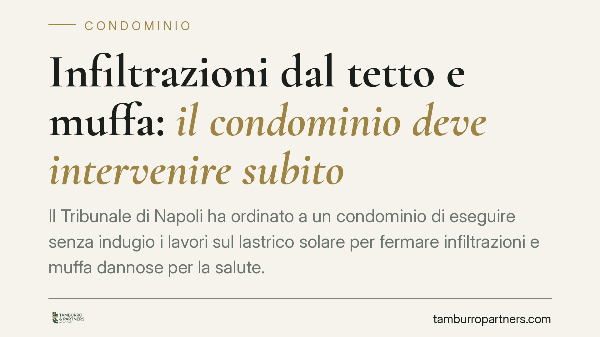

Infiltrazioni dal tetto e muffa: il condominio deve intervenire subito
Il Tribunale di Napoli ha ordinato a un condominio di eseguire senza indugio i lavori sul lastrico solare per fermare infiltrazioni e muffa dannose per la salute. Il punto centrale: la delibera assembleare, da sola, non basta. Serve l'avvio concreto delle opere. Una pronuncia che chiarisce i confini della tutela d'urgenza in materia condominiale.

Il caso
Un proprietario subisce infiltrazioni d'acqua provenienti dal lastrico solare. L'umidità genera muffa diffusa negli ambienti, con un rischio che non è solo estetico ma igienico-sanitario. Il condominio aveva deliberato gli interventi, ma i lavori non erano mai partiti. Di fronte all'inerzia, il proprietario si è rivolto al giudice chiedendo un provvedimento d'urgenza.
Il Tribunale di Napoli, ottava sezione civile, ha accolto la domanda e ordinato al condominio l'esecuzione immediata delle opere necessarie a bloccare le infiltrazioni.
Inquadramento normativo
Lo strumento utilizzato è l'art. 700 c.p.c., che consente di ottenere un provvedimento cautelare "atipico" quando ricorrono due condizioni: il *fumus boni iuris*, cioè la probabile fondatezza del diritto fatto valere, e il *periculum in mora*, ovvero il rischio di un danno grave e irreparabile nel tempo necessario a un giudizio ordinario.
Nel caso del lastrico solare, va ricordato il riparto di responsabilità fissato dalla giurisprudenza: quando il lastrico è di proprietà o uso esclusivo di un condòmino, dei danni da infiltrazioni rispondono sia il proprietario esclusivo (per la parte legata alla manutenzione e all'uso) sia il condominio (per la quota riferibile alla funzione di copertura dell'edificio). Resta però la competenza condominiale sugli interventi che riguardano la tenuta strutturale del fabbricato.
Il Tribunale ha valorizzato un principio netto: la delibera assembleare che approva i lavori non esaurisce l'obbligo del condominio. Finché le opere non vengono materialmente avviate, l'inadempimento permane e il danno continua a prodursi. Da qui la legittimità del ricorso d'urgenza.
Perché la salute fa la differenza
Il giudice ha tenuto distinti due profili.
Il primo riguarda il danno attuale e progressivo alla salubrità dell'abitazione: la muffa da infiltrazioni incide sulla vivibilità e sulla salute di chi occupa l'immobile. Questo è un pregiudizio che non tollera attese ed è stato ritenuto meritevole di tutela immediata.
Il secondo riguarda i danni estetici interni già prodotti (pareti rovinate, tinteggiature da rifare). Questi profili, essendo risarcibili in un secondo momento, sono stati rinviati al giudizio di merito. Non c'era, per quella voce, l'irreparabilità richiesta dall'art. 700 c.p.c.
Implicazioni pratiche
Per chi subisce infiltrazioni, la pronuncia conferma che non è necessario attendere l'esito di una causa ordinaria, spesso lunga, quando è in gioco la salubrità dell'immobile. La via cautelare è percorribile.
Per il condominio e per l'amministratore, il messaggio è chiaro: approvare i lavori in assemblea non mette al riparo da responsabilità. L'amministratore ha l'obbligo di dare esecuzione alle delibere e di attivarsi per gli interventi urgenti a tutela delle parti comuni. L'inerzia nell'affidamento e nell'avvio dei lavori può fondare sia un ordine giudiziale sia una responsabilità per i danni che continuano a maturare.
Resta ferma la necessità di individuare correttamente i soggetti chiamati a rispondere, soprattutto quando il lastrico è di uso esclusivo: l'azione va impostata tenendo conto del riparto tra proprietario esclusivo e condominio.
Cosa fare in concreto
- Documentate il danno fin da subito: foto datate, eventuale relazione tecnica che colleghi la muffa alle infiltrazioni e ne attesti l'incidenza sulla salubrità.
- Segnalate per iscritto all'amministratore, con PEC o raccomandata, chiedendo l'avvio immediato dei lavori e fissando un termine.
- Verificate lo stato delle delibere: accertate se i lavori sono stati approvati e, in caso affermativo, sollecitatene l'esecuzione effettiva.
- Valutate il ricorso d'urgenza quando l'inerzia persiste e il pregiudizio alla salute è attuale: è lo strumento adatto a ottenere un ordine rapido.
- Tenete distinti i due piani: l'urgenza per fermare le infiltrazioni e la richiesta risarcitoria per i danni già prodotti, da far valere nella sede di merito.
La pronuncia napoletana si inserisce in un orientamento che tende a riconoscere tutela rapida quando l'abitazione diventa insalubre. Ogni situazione, però, va valutata nelle sue specificità tecniche e documentali.
Disclaimer
Contributo informativo a cura di Tamburro & Partners - Avv. Giuseppe Tamburro. Non costituisce parere legale.
Ogni condominio ha una storia a sé.
Se gestisci un'amministrazione e vuoi un confronto su una specifica questione condominiale, scrivi allo studio. Ti rispondiamo entro un giorno lavorativo.